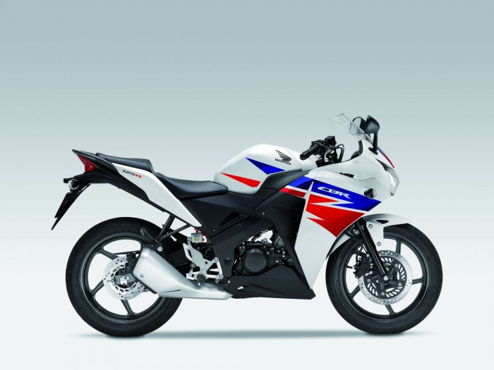
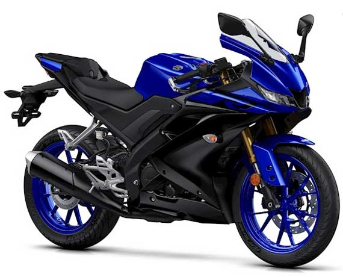

CBR 125
Giriş seviyesi yarış motoru bakımından şahsi olarak en uygun gördüğüm motosiklettir. Eminim diğerlerine göre çok gösterişli değil (hondanın hiçbir motoru bana göre yamahadan gösterişli değil de neyse) ancak oturuş bakımından, sürücüyü daha büyük yarış motorlarına hazırlama açısından gerçekten ideal bir motosiklet. Her motosiklette olduğu gibi üzerinde gelen berbat lastikleri değiştirerek yumuşak hamurlu lastikler ile güzel viraj zevkleri yaşayabilirsiniz.aynı serinin 250cclik olanı da mevcuttur. Sanırım diğer giriş seviyesi yarış motorlarından tek dezavantajı, aralarında en düşük beygire sahip olması. (giriş seviyesi diyoruz, ne kadar dezavantaj o da tartışılır.
DAELİM ROADWİN 250R

Trafikte hiç rastlamadığım, Türkiyede satılıp satılmadığını bile merak etmiceğim kadar kötü tasarıma sahip bi motosiklet. Beğenen beğenir, zevkler ve renkler tartışılmaz. Aldığım duyumlarla konuşacak olursak oldukça titreşimli bi motosiklet. Şanzımanının da sorunlu olduğu söyleniyor. Bu kadar dedikodu yeter.
Megelli 250R

Tek silindir 250CC ve su soğutmalı bu motosikleti diğer giriş seviyesi motosikletlerden ayıran önemli ayrıntıları var. Üzerinde standart olarak gelen çelik fren hortumu ve papatya disk fren hissini mükemmele yakın seviyeye getiriyor. İsim olarak italyanı andıran, ancak esasında İngiliz olan bu motosikletin en büyük dezavantajı orta üstü devirlerde titreşimi bi hayli yüksek olması. Bu da uzun yolda sizi oldukça rahatsız edebilir. “Aman kim uzun yola çıkacak canım, şurda cafeye gidip iki hava atacaz” diyosanız bu motorla ilgilenebilirsiniz.
YAMAHA YZF R125
Yamahanın muhtemelen sadece görüntüsü sebebiyle yüzbinlerce sattığı bir motosiklettir. Motosikletten anlamayan herkese çekici gelen, agresif tasarımıyla öne çıkan bu motosiklet, sadece tek silindir ve 125cc lik bir hacme sahip. Bu motosiklet ile tüm dikkatleri üzerinize çekeceğiniz tartışılmaz. Tabi gaz açıp 125cc’lik o tek silindirin fıtı fıtı sesini duyurmadığınız sürece.
YUKİ SPİTZER

Hafif scooterlarını görmeye alıştığımız yuki markası da bu gösteriş pazarından kendine pay çıkarmayı amaçlamış olacak ki Yuki Spitzer ı yapmış. Nispeten R125e göre biraz daha güçlü yapısı 250cc oluşu onu biraz daha güçlü yapıyor. Farlarının mercekli oluşu agresifliği tamamlayarak Yamaha R125’den bi seviye yukarı çıkarıyor. Ama biri Yuki biri Yamaha, ne kadar öne çıkarır siz karar verin.